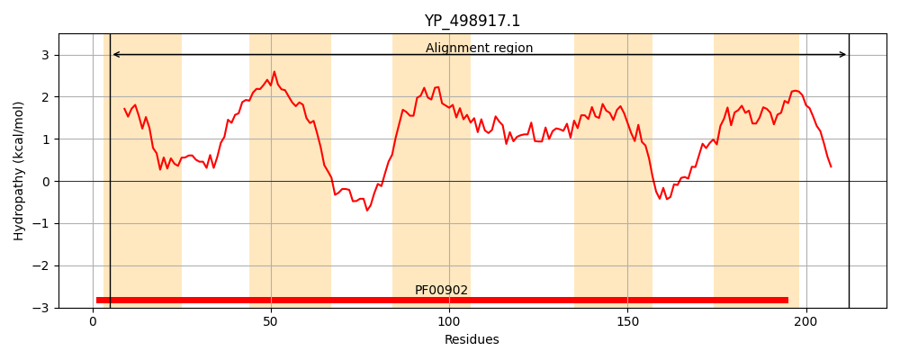
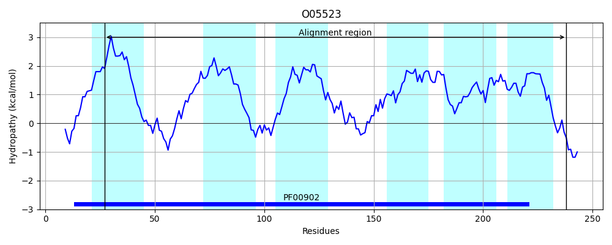
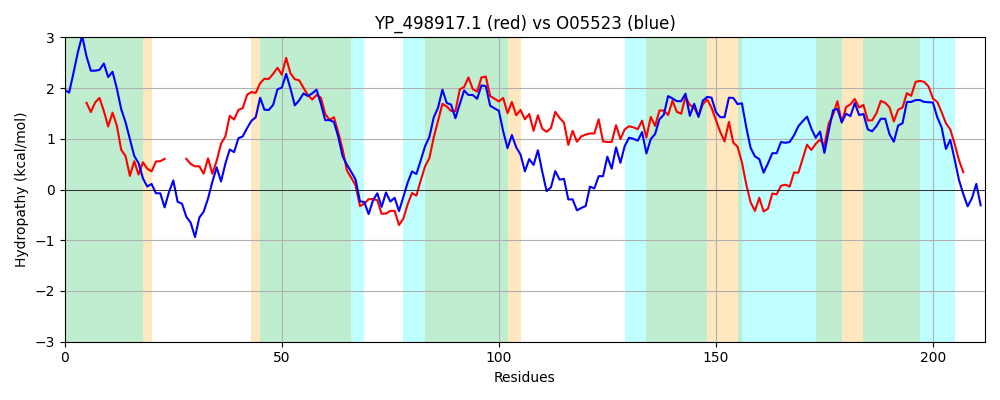

Hit Accession: O05523
Hit TCID: 2.A.64.3.2
Hit Description: gnl|BL_ORD_ID|6747 gnl|TC-DB|O05523|2.A.64.3.2 Sec-independent protein translocase protein tatCy - Bacillus subtilis.
Mach Len: 212
e:0.000000
Query TMS Count : 5
Hit TMS Count: 6
TMS-Overlap Score: 5.100000
Predicted Substrates:CHEBI:8526;protein polypeptide chain
BLAST Alignment:
Score: 421 , Bit scores: 166 bits, E-value: 1.6e-51, Alignment length: 212, Percentage identity: 36
Query: 5 ITVIVVYVSSFWWMTPFITYITRA----HVSLHAFSFTEMIQIYVMIIFFIAFCFISPVMFYQLWAFIAPGLHNNERQFIYKYSFFSVLLFCAGVAFAFYVGFPMIIQFALKLSLTLNISPVIGFKAYLIELIRWLFTFGLLFQLPILFMGLAKFGLIDTTSLKHYRKYIYFACFVLASIIAPPDLTLNILLTLPLILLFEFSMFIVKFTCR 212
+ +V +++ F+ P I Y+ ++L+AF+ T+ + +++ F I SPV+ YQLWAF++PGL+ ER+ Y S+LLF AG++F++Y+ FP ++ F ++S LN++ VIG Y L++ FGLLFQ+P++ M L + G++ L RKY YF V+A++I PP+L ++++T+PL++L+E S+ I K R
Sbjct: 27 LAFVVFFIAGFFLAKPIIVYLQETDEAKQLTLNAFNLTDPLYVFMQFAFIIGIVLTSPVILYQLWAFVSPGLYEKERKVTLSYIPVSILLFLAGLSFSYYILFPFVVDFMKRISQDLNVNQVIGINEYFHFLLQLTIPFGLLFQMPVILMFLTRLGIVTPMFLAKIRKYAYFTLLVIAALITPPELLSHMMVTVPLLILYEISILISKAAYR 238 | Protein Hydropathy Plots: |
|---|
|  |  |
Pairwise Alignment-Hydropathy Plot:
|
|---|
|  |